拆卸
拆卸车轮。 参考： 车轮和轮胎
举升车辆。 参考： 举升
使用内止外动工装拆卸前稳定杆与前连接杆螺母a。
扭矩：（120±10）N.m
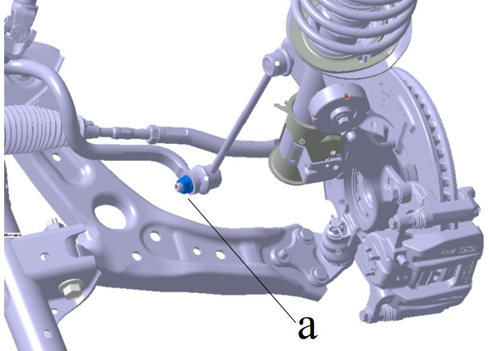
拆卸转向横拉杆与转向节连接螺母和开口销b。
扭矩：（52±3）N.m
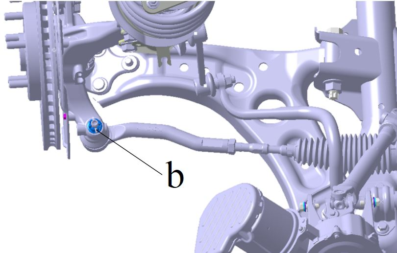
拆卸前摆臂球头销与前摆臂的连接螺母c。
扭矩：（90±5）N.m
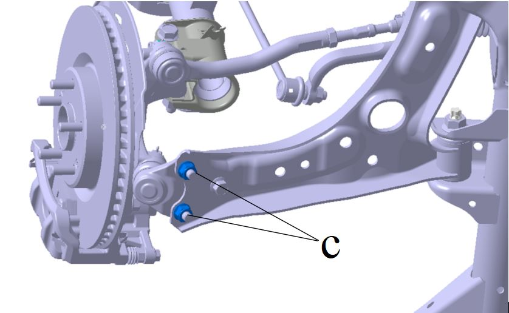
拆卸前摆臂球头销与前摆臂的连接螺栓d。
扭矩：（120±10）N.m
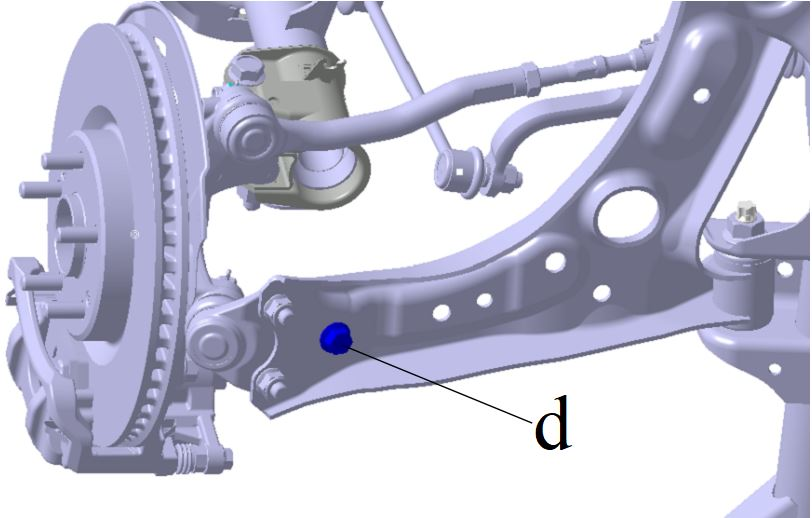
拆卸后悬置与后悬置支架连接螺栓e。
扭矩：（75±7.5）N.m
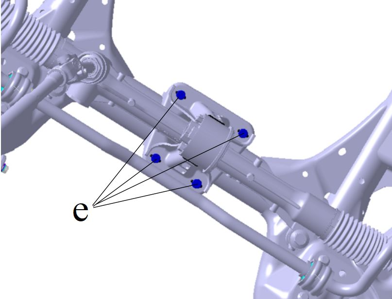
拆卸前左悬置与前右悬置安装螺栓f。
扭矩：（120±12）N.m
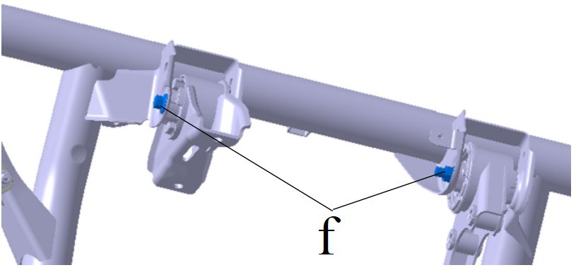
拆卸转向器与转向柱连接螺栓g。参考： 机械转向器总成
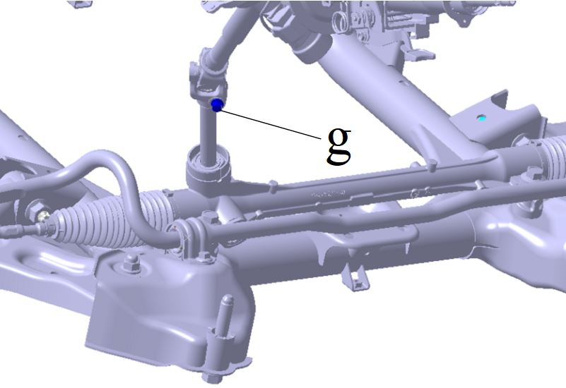
在前副车架总成与下车体安装的4个套管接触面做下面的十字画线标记。
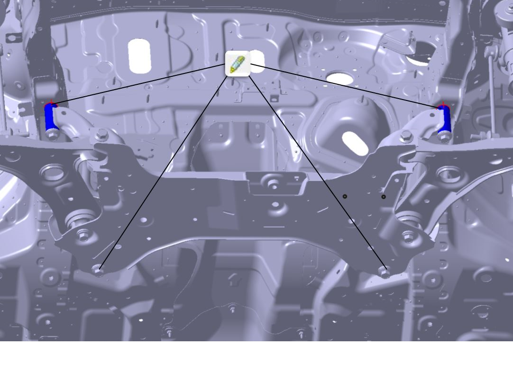
使用可以上下运动的托举装置支撑前副车架总成。
拆卸前副车架总成连接螺栓螺栓h和i。
扭矩h：（200±20）N.m；
扭矩i：（270±20）N.m。
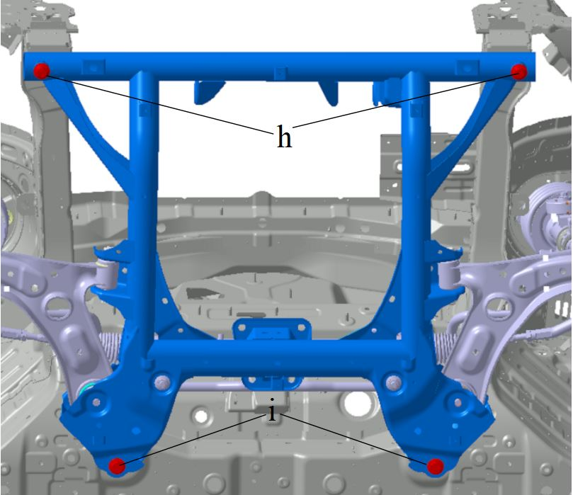
拆卸前副车架总成及其组件。
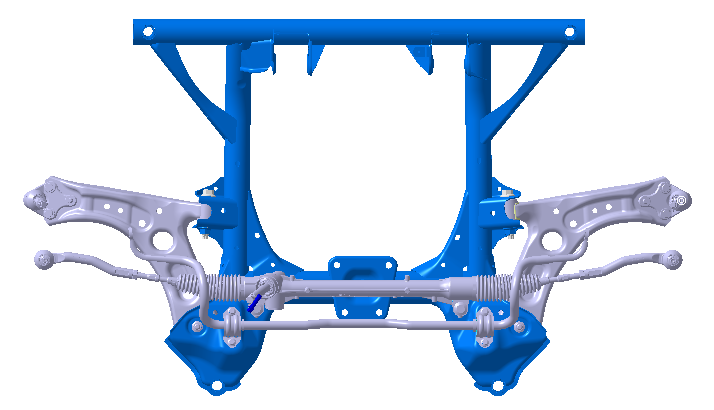
拆卸转向器总成。 参考： 机械转向器总成
拆卸前稳定杆总成及其附件。参考： 前稳定杆总成
拆卸前摆臂总成。参考： 前摆臂总成(衬套)
后悬置软垫总成，即为前副车架总成。
安装
安装顺序与拆卸顺序相反。
不更换前副车架总成时的安装定位说明。
（1）拆卸时按照拆卸10说明在前副车架总成与下车体安装的套管接触面做下面的画线标记。
（2）前副车架总成与下车体合装时，目视将画线标记对正，然后打紧螺栓h和i。
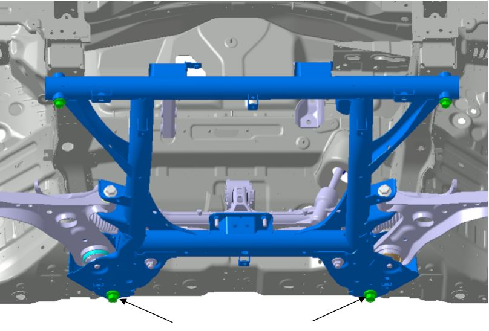
更换前副车架总成时的安装定位说明。
（1）拆卸时不需按照拆卸第10条说明进行画线标记。
（2）前副车架总成与下车体合装时，先将2颗定位双头螺柱i与下车体2个后安装点装配到位。
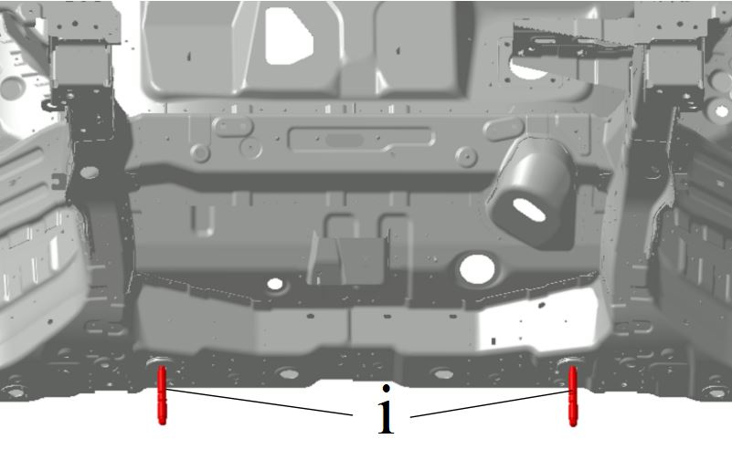
（3）举升前副车架总成与下车体和双头螺柱配合。
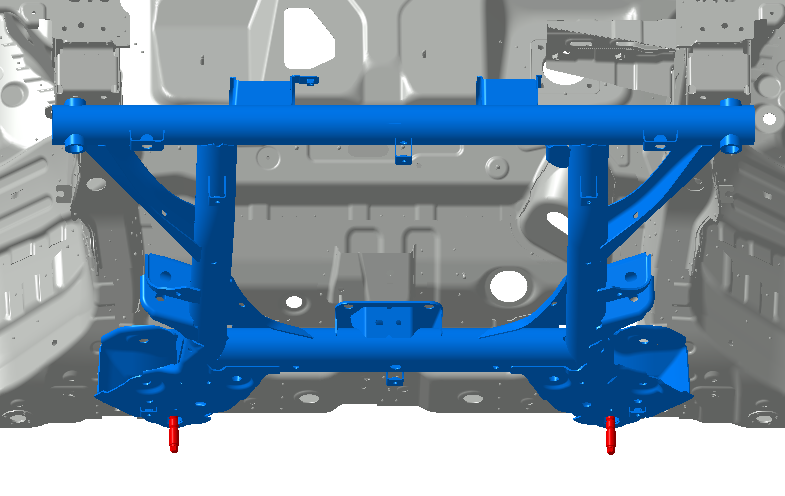
（4）前副车架总成前后套管与下车体安装面贴合，保持该状态先将前副车架2个前安装点螺栓h装配打紧。
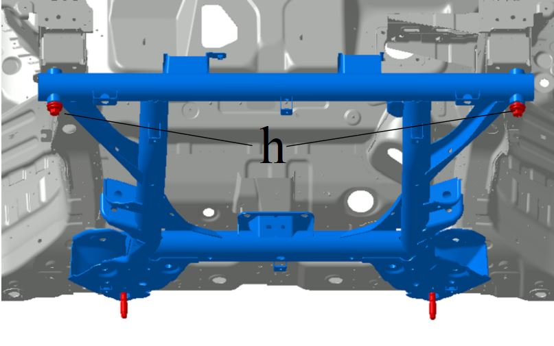
（5）拆取后点双头螺柱1颗，装1颗螺栓i并打紧。
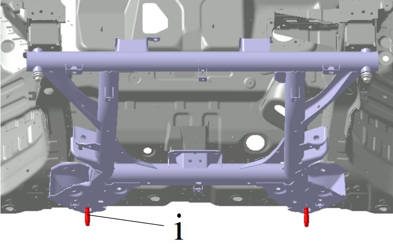
（6）再拆取另1颗后点双头螺柱，装最后1颗螺栓i并打紧。
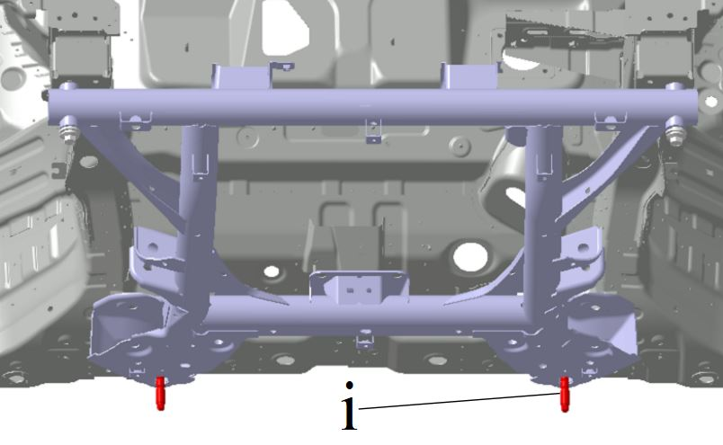
四轮定位调整。
参考： 前轮定位参数检查